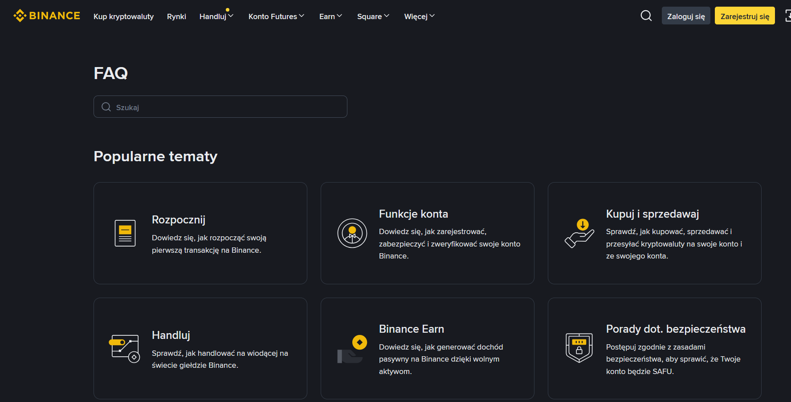
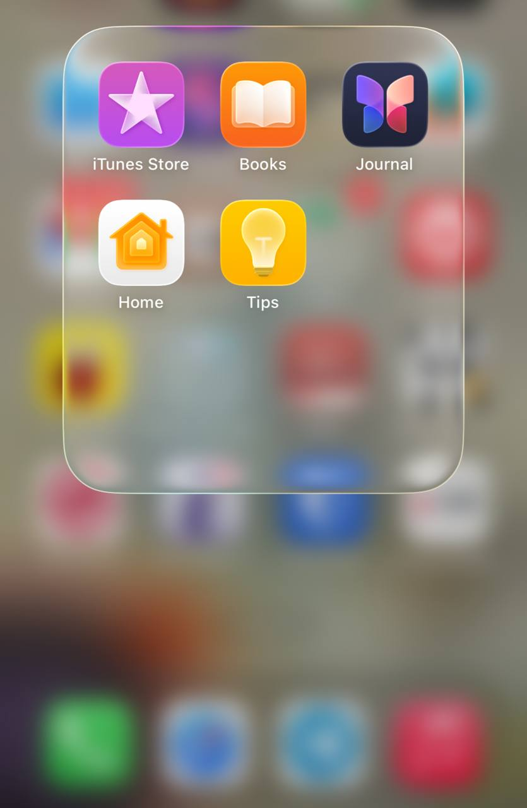

10. Pomoc i dokumentacja
EN: Help and documentation. Even though it is better if the system can be used without documentation, it may be necessary to provide help that is easy to search and focused on the user's task.
PL: Pomoc i dokumentacja. Chociaż najlepiej, gdy system jest intuicyjny bez instrukcji, warto zapewnić pomoc, którą łatwo przeszukać i która koncentruje się na konkretnych zadaniach użytkownika.
Przykład 1: Centrum Pomocy (FAQ)

Uzasadnienie: Łatwo dostępna baza wiedzy z wyszukiwarką pozwala użytkownikowi samodzielnie znaleźć rozwiązanie problemu w dowolnym momencie.
Przykład 2: Ikonki w interfejsie

Uzasadnienie: Proste ikonki, np. kosz na śmieci do usuwania lub lupa do wyszukiwania, pomagają szybko zrozumieć funkcje aplikacji bez czytania opisów.